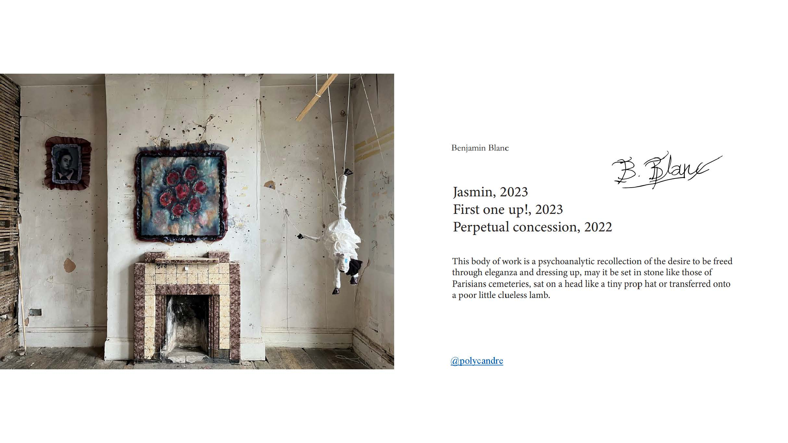
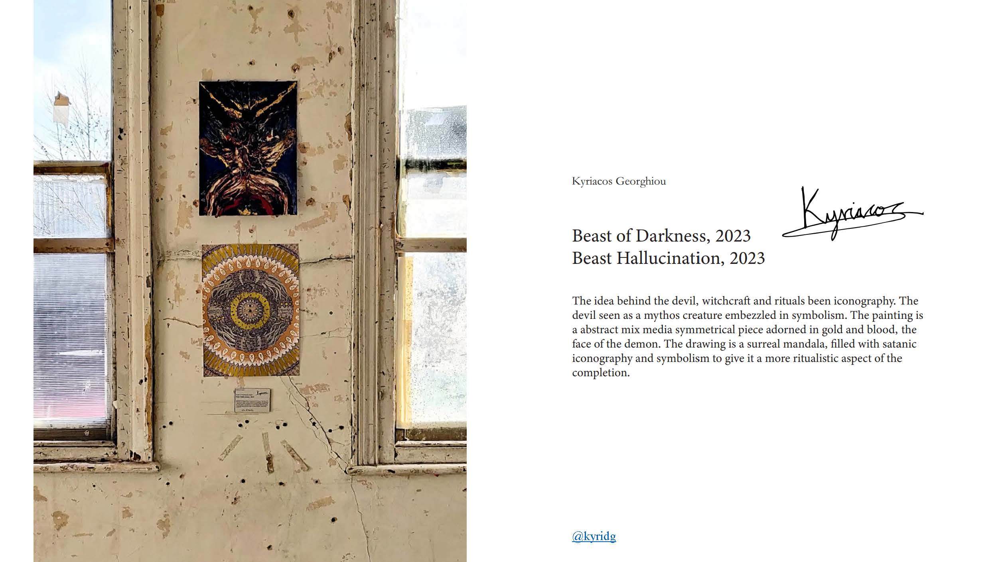
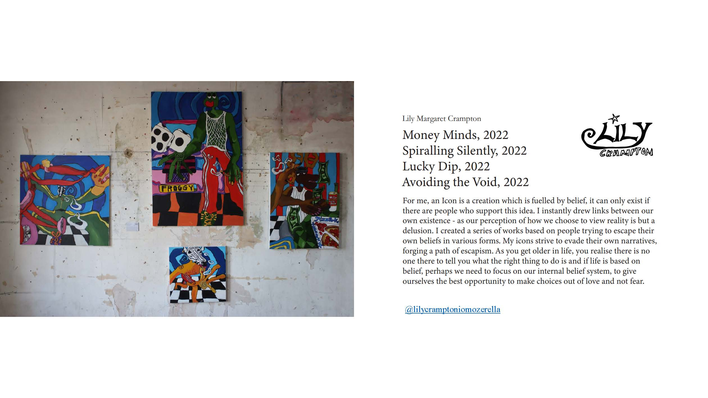
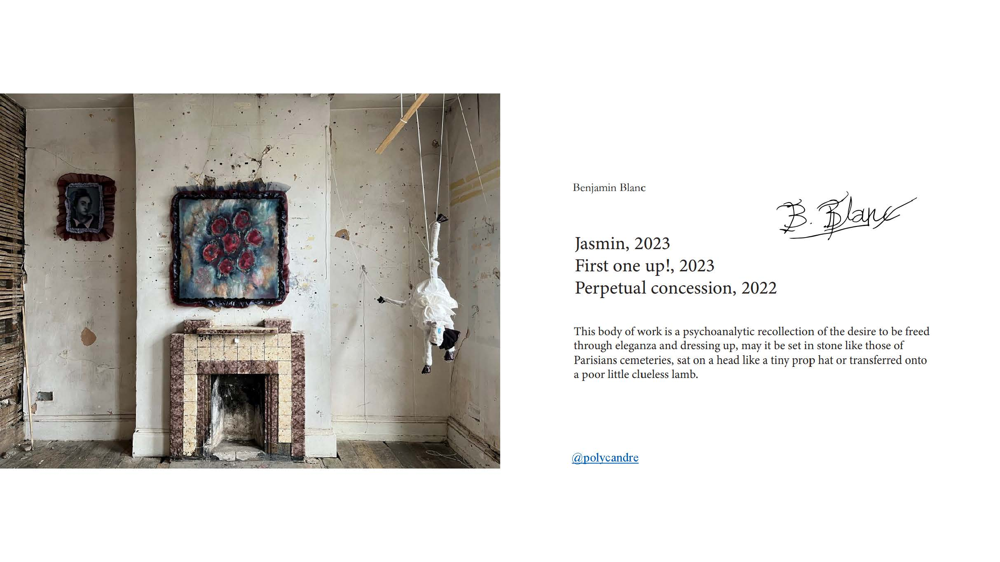
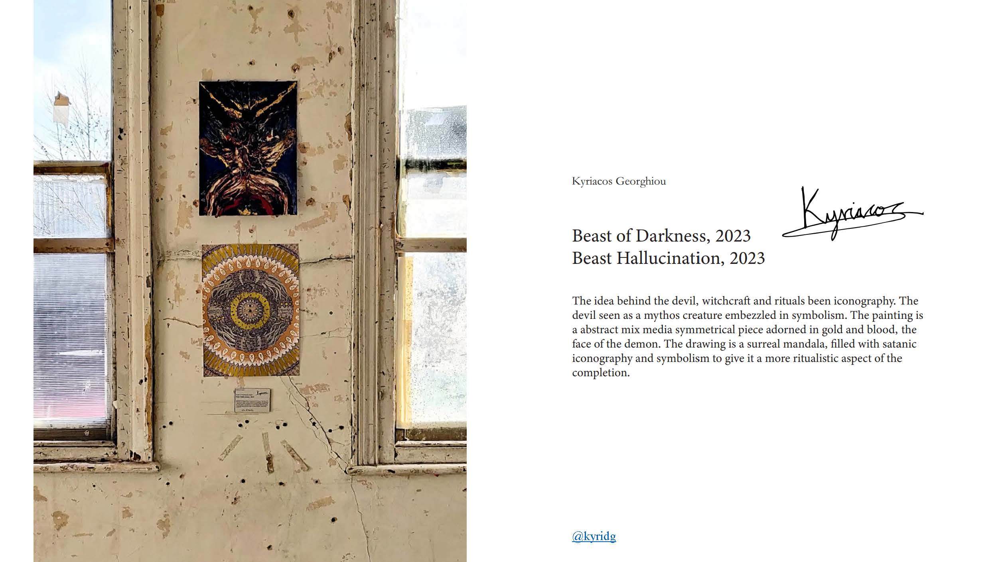
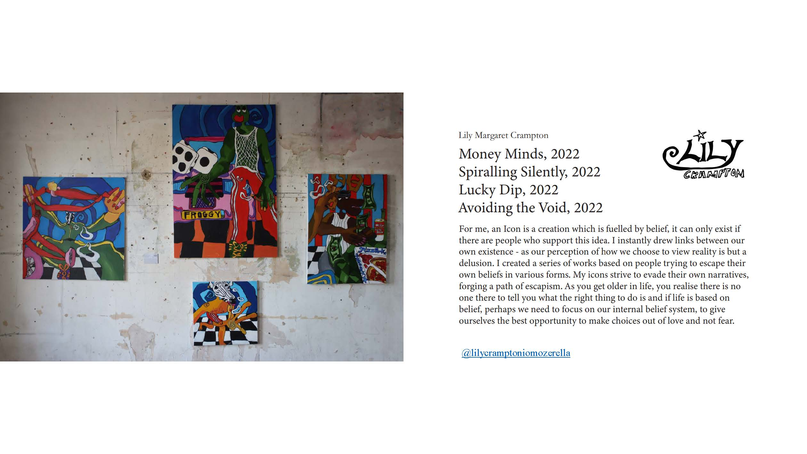

Originally depicting religious figures, the definition of ‘icon’ has been re-interpreted through time while the term’s borders become less exact. In contemporary culture, ‘icon’ covers a wider range of concepts: cult classic franchises, symbols of identity, gaming and cartoon characters, memes, heirlooms, or even a manifested collective emotion. The fluidity of the term then raises questions about where explorations take place.
Reimaging Icons aims to investigate the relationship between the icon and its environment and how an icon’s power could be affected depending on the amount of acknowledgement and recognition given. The significance of a site-specific icon, at times, can be rendered on both extremes, therefore, the exhibition also questions the necessity of physicality for an ‘icon’: could an ‘icon’ be realized through repeated action? When transferring a strong feeling of faith from one person to another, will the aggregation of powerful beliefs eventually manifest into reality?
With works from over 30 artists, using a wide range of mediums from painting, installation, to sound, Reimagining Icons encourages the viewers to not only renew their understanding of ‘icon’ but also broaden their idea on all existing words in a fully immersive experience.
Airan Suzuki, Alexis Augusto, Andie Aylsworth, Babak Ahteshamipour, Benjamin Blanc, Bertie Garnett, Charlotte Bendrey, Daisy May Brown, Daniel Borrow, Dien Berziga, Liber, Eleonore Bugbee, Emese Lazar, Georgia Germani, Jaemin Paek, Kai Yan Cheung, Kate Williams-Parry, Kyriacos Georghiou, Lily Margaret Crampton, Lizzy, Mary ZiXin Yan, Nathan Harper, Niamh Dale, Nikita Snegirjov, Nina Wong, Pennie Haynes, Reuben Brown, Ruby May Lewis, Sohyun Han, Tom McVeigh, Tom Enoch
 




